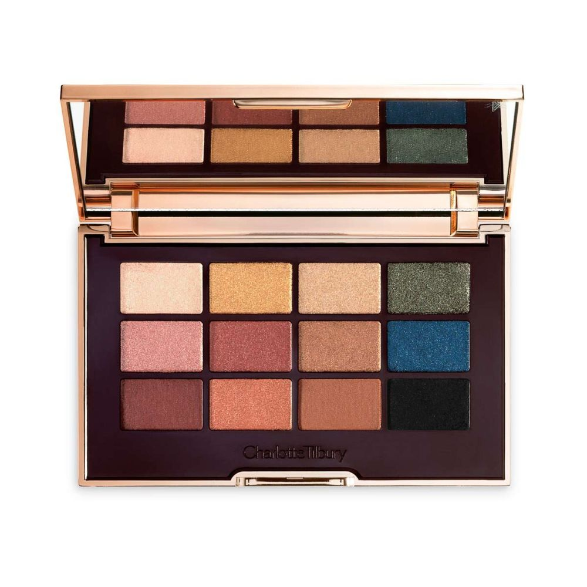

Paleta The Icon

Compuesta por 12 sombras que incluyen desde un tono champagne iridiscente a un perfecto negro carbón con una pequeña nota de brillo
para unos ojos eléctricos, The Icon Palette, de Charlotte Tilbury (65,55 euros), es una paleta de sombras que sienta bien a cualquier tono de piel y de Además,
está formulada con tecnología de polvo "wet touch" una mezcla que consigue un efecto de seda que se transfiere sin fallos a la piel, creando una película de color.
"Prepara los ojos con un matiz de dorado, y realza con el pigmentado tono bronce, y ahúmalo utilizando el tono cobre y mézclalos". Esta paleta la venden en Sephora.
Los expertos de Kiko Milano proponen "aplicar una sombra de ojos en polvo de color tierra en la cuenca como las de la paleta Green Me Eyeshadow Palette
introduciéndola al parpado móvil de manera sutil. Después delineamos el párpado móvil con un lápiz negro cremoso las pestañas superiores e inferiores para poder
difuminarlo para conseguir un efecto degradado, la línea de agua de ambos párpados y para finalizar ponemos un toque de máscara de pestañas si queremos una mirada con más definición".